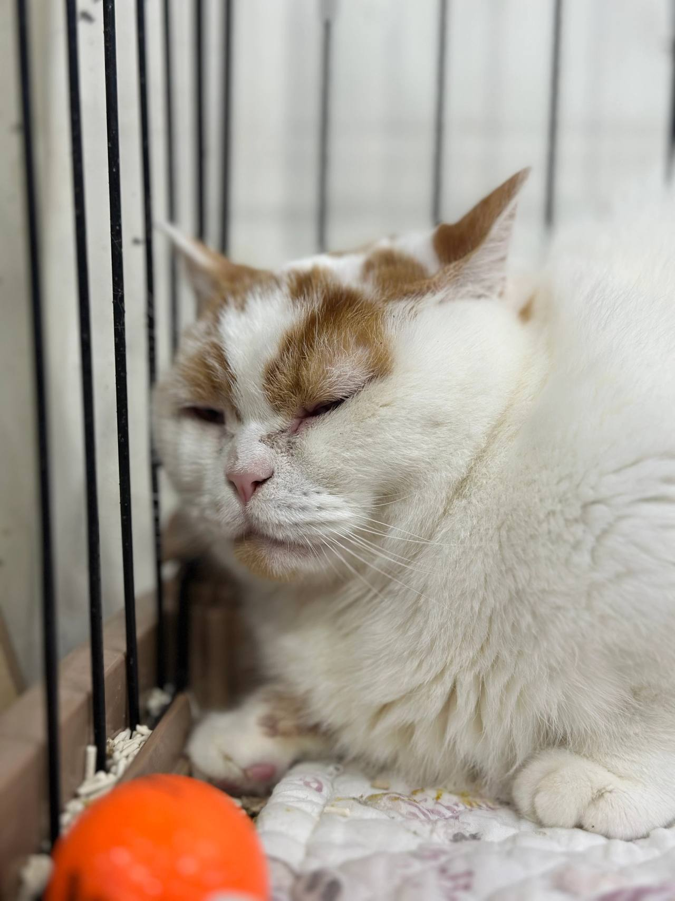
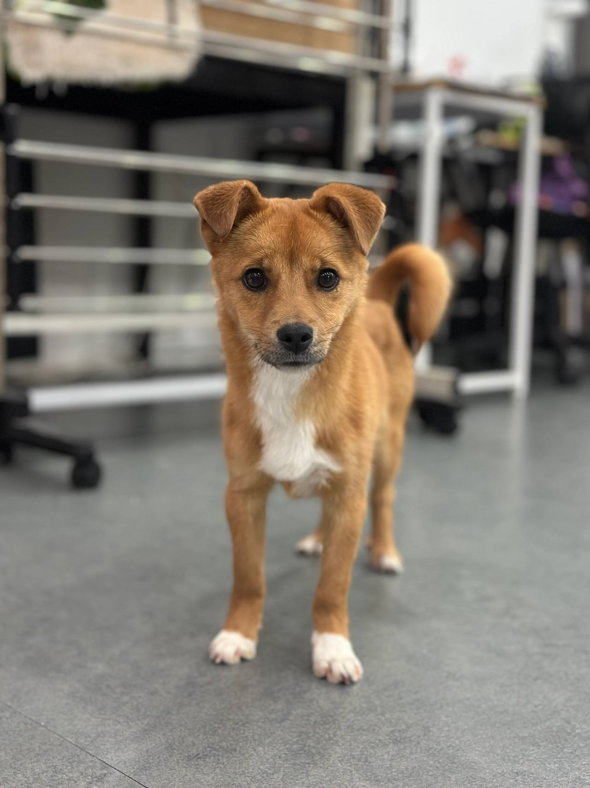
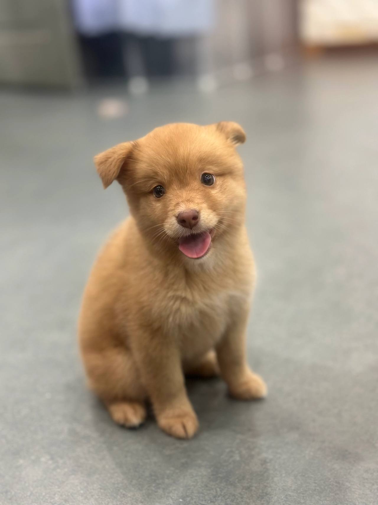
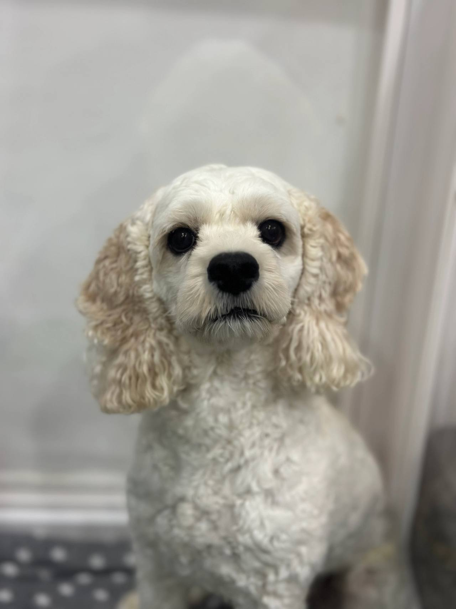
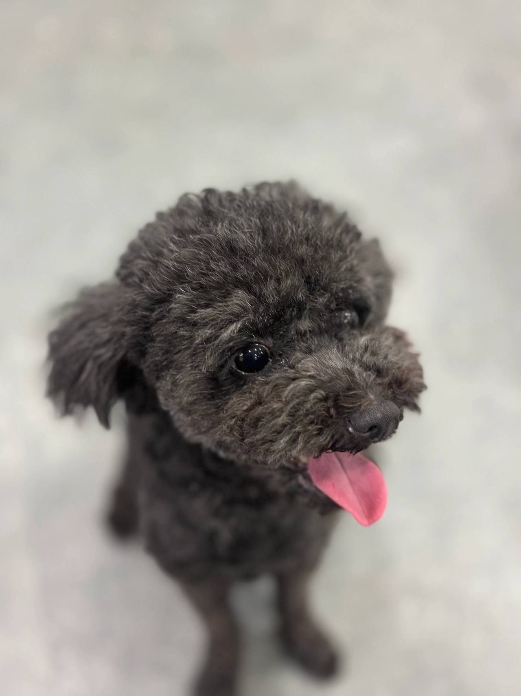

임신, 출산
출산 전후로돌보기 어렵거나아기와 함께 두기불안할 때
LOCAL GUIDE
반려인의 질병이나 고령화, 해외 이주 등 피치 못할 사유로 달성군고양이파양 상담을 요청하는 사례가 적지 않습니다. 아이에게 스트레스가 최소화되는 공간을 찾기 위해선 면밀한 소통과 점검이 필수적입니다. 보호실 여유 공간이 확보되지 않은 상태에서는 방문하셔도 접수가 불가하니 공간 현황을 먼저 점검하시기 바랍니다.
REHOMING
개인적인 사정으로 반려견과 더 이상 함께하기 어려운 상황일 때 체계적인 절차를 거쳐 아이를 입소시키고 무료 분양으로 보금자리를 이어 줍니다. 전화 상담(0505-707-0401)을 통해 현재 상황을 파악하며 무리한 수용 대신 여건에 맞춰 신중하게 돌봄을 시작합니다.
갑작스러운 환경 변화 속에서도 아이가 평온함을 잃지 않도록 세심하게 보살피며 다음 행보를 준비합니다. 이는 책임 있는 보호 속에서 아이에게 새로운 가족을 만날 기회를 열어 주는 과정입니다.
새로운 가족을 찾아 주는 일은아이에게 건넬 수 있는마지막 선물입니다.
출산 전후로돌보기 어렵거나아기와 함께 두기불안할 때

함께 살다동물 알러지가 나타나생활이 어려워졌을 때

해외로 데려갈 수 없거나이사한 집에서함께하기 어려울 때군 입대와 오랜 부재도같은 경우에 가깝습니다.

보호자가 아프거나연로해졌을 때아이도 나이가 들어집에서 돌보기 어려울 때
상담부터 입양 공고까지, 순서는 같습니다.

유선 상담을 통해 나이, 지역, 질병 유무와 특이 상황을 확인합니다. 센터 내부 공간을 종합적으로 살펴본 뒤 1차 입소 가능 여부를 결정합니다.

직접 센터로 방문하시거나 이동 지원 일정을 조율하여 선택합니다. 전국 어디든 전담 인력이 무상으로 픽업하여 이동을 돕습니다.

제반 확인 사항과 규정된 비용 조항을 면밀하게 검토합니다. 안내 내용을 충분히 숙지한 후 정식 입소 동의서를 작성합니다.

건강 상태와 함께 대형견, 소형견, 노령견 여부를 다각도로 살핍니다. 확인된 상태에 맞춰 아이가 안전하게 머물 전용 공간을 정합니다.

안정적인 생활 속에서 아이의 사진과 영상을 정성껏 촬영합니다. 새로운 인연을 맞이할 수 있도록 사전 자료를 차분히 정리합니다.

공식적인 입양 공고를 등록하여 아이의 다음 여정을 이끕니다. 적합한 보금자리를 찾아 새로운 가족과 따뜻하게 연결됩니다.
개별 일과와 성향 점검을 거쳐 생활 적응을 준비하고 있는 강아지 현황입니다.
양육 환경과 반려견의 성향이 부합하는지 점검하는 순서입니다.
주거 형태, 가족 구성원의 동의 여부, 돌봄 시간 등을 유선 상담을 통해 점검합니다.
보호소에 방문하여 개체의 건강 이력과 행동 특성을 확인하고 직접 대면 시간을 가집니다.
지속 양육에 관한 세부 항목을 확인하고 확인 서류를 작성한 뒤 가정을 이룹니다.
산책하고, 밥 먹고, 미용하는 보호소의 하루입니다. 사진을 누르면 그 이야기를 볼 수 있어요.
안내
아파트나 빌라가 밀집한 달성군 주거 환경에서는 이웃 간의 마찰이나 층간 소음 문제로 인해 위탁 문의가 종종 발생합니다.
전국 단위 유선 상담 창구인 0505-707-0401 번호로 전화하시면 달성군고양이파양 절차와 필요 준비물을 상세히 안내받으실 수 있습니다. 무작정 찾아오시기 전에 현재 수용 가능한 공간이 남아있는지 유선으로 먼저 파악하셔야 합니다. 담당자와의 면밀한 대화를 통해 아이의 상태에 맞는 입소 계획을 단계별로 세워드립니다.
수년간 소중하게 기르던 고양이이었지만, 보호자의 급작스러운 희귀 질환 발병과 장기 입원, 혹은 해외 파견 및 이민으로 인해 더는 양육을 이어갈 수 없게 되는 안타까운 사연들이 많습니다. 홀로 남겨질 아이를 두고 매일 눈물로 밤을 지새우는 보호자들의 고뇌는 결코 가볍지 않습니다.
불가피한 현실의 벽에 부딪혔을 때 가장 중요한 것은 시간만 끌다가 최악의 방치 상태에 이르게 하지 않는 것입니다. 달성군 달성군고양이파양 센터를 찾았던 한 보호자 역시 자신의 투병 생활 속에서 아이에게 더 나은 환경을 찾아주기 위해 용기 있는 선택을 내렸습니다.
소유권 이전을 위한 동물등록증 또는 마이크로칩 등록 번호가 반드시 확인되어야 합법적인 행정 처리가 가능합니다. 또한 지금까지 진행된 종합백신, 광견병, 켄넬코프 등 예방접종 수첩과 중성화 수술 여부 증빙 서류가 요구됩니다.
아이의 정서적 안정을 위해 평소 애착을 보이던 장난감이나 담요, 급여하던 사료 소량을 지참하시는 것이 권장됩니다. 달성군고양이파양 진행 시 이러한 서류와 물품이 완비되어 있어야 다음 입양 가정을 매칭할 때도 객관적인 신뢰를 확보할 수 있습니다.
함께 지내온 시간 동안 관찰된 사소한 습관부터 돌발 행동까지 모두 기록하여 전달하는 것이 매우 중요합니다. 분리불안으로 인한 하울링, 벽지 훼손, 특정 대상(어린이, 남성 등)에 대한 경계심은 감추지 말아야 합니다.
솔직한 고지가 이루어져야 시설 내 생활 중 안전사고를 예방하고 적합한 교정 훈련을 설계할 수 있습니다. 달성군고양이파양 상담 시 아이의 기질적 성향을 체크리스트 항목별로 명확하게 설명해 주시기 바랍니다.
입소를 진행하기 전에는 지금까지의 양육 이력을 명확히 증빙할 수 있는 자료를 정리해 두어야 합니다. 동물등록 변경을 위한 등록번호와 외장칩 또는 내장칩 정보, 동물병원에서 발급받은 종합 예방접종 증명서 및 중성화 수술 여부 확인서가 기본적으로 요구됩니다.
평소 사용하던 방석, 장난감, 식기, 먹이던 사료를 함께 인계하면 새로운 공간에서의 낯선 스트레스를 줄이는 데 큰 도움이 됩니다. 달성군고양이파양 상담 시 이러한 생활 기록을 사전에 공유해 주시면 아이 맞춤형 관리 계획을 수립하는 데 매우 유용합니다.
고양이의 생애 전환점을 마련하는 첫걸음은 전문 상담원과의 1:1 유선 대화로 시작됩니다. 보호자의 불가피한 사유(이사, 해외 이민, 출산, 질병, 군입대 등)와 함께 아이의 기본 제원을 상세히 청취합니다.
나이, 성별, 품종, 현재 건강 상태 및 기저 질환 유무, 중성화 여부를 종합적으로 확인하여 입소 가능 여부를 1차 검토합니다. 달성군 달성군고양이파양 접수 센터(0505-707-0401)를 통해 대기 없이 상세한 진단 및 안내를 받으실 수 있습니다.
많은 분들이 '한 마리당 얼마인가요?'라는 식의 단일 고정 비용을 묻곤 하십니다. 하지만 1살 된 건강한 개체와 10살 된 심장병을 앓는 노령 개체에게 들어가는 관리와 의료적 처치는 비교할 수 없을 만큼 큰 차이가 납니다.
일률적인 고정가를 제시하는 곳은 정밀한 상태 진단 없이 운영되거나 입소 후 추가 비용을 요구하는 경우가 많습니다. 달성군고양이파양 비용은 전화(0505-707-0401) 상담을 통해 아이의 건강 상태, 연령, 예방접종 및 중성화 여부를 정밀 분석한 뒤 투명하게 개별 책정됩니다.
입질이나 심한 헛짖음, 극심한 분리불안을 숨기고 입소시키는 경우 오히려 시설 내 생활에서 큰 위험을 초래할 수 있습니다. 사실대로 행동 양상을 알려주셔야 그에 맞춤화된 전문 훈련사의 중재와 관리 계획을 수립할 수 있습니다.
이러한 행동 이력을 바탕으로 해당 특성을 충분히 이해하고 교정 의지가 있는 경험 많은 입양 희망자를 탐색하게 됩니다. 달성군고양이파양 접수 시 아이의 사소한 습관 하나까지 가감 없이 진솔하게 털어놓아 주시는 것이 무엇보다 중요합니다.
보호자가 직접 시설을 찾아와 관리 환경을 확인하는 방문 인계는 불안감을 해소할 수 있는 가장 이상적인 방식입니다. 시설의 청결도, 상주 관리사의 태도, 환기 및 냉난방 시스템을 직접 살피는 것이 권장됩니다.
그러나 이동 수단이 없거나 원거리 이동이 곤란한 보호자를 위해 전문 픽업 서비스가 상시 운영되고 있습니다. 달성군고양이파양 신청 시 거주 지역과 희망 일시를 조율하면 안전 케이지를 구비한 전용 차량이 직접 찾아갑니다.
전국 대표 번호를 통한 1차 비대면 상담
유선상으로 아이의 품종, 연령, 예방접종 상태, 잔여 공간 여부를 종합적으로 확인하고 입소 가능성을 타진합니다.
보호 위탁 계약서 작성 및 권한 인계
법적 소유권 이전과 관련된 서류에 상호 날인하고 사후 관리 및 입양 심사 원칙에 대한 규정을 숙지합니다.
기질 및 생활 습관 비대면 사전 평가
공격성, 분리불안, 짖음, 입질 여부 및 기존 배변 방식을 가감 없이 파악하여 보호 적합성을 평가합니다.
달성군고양이파양 상담 전화는 무엇인가요?입소 상담 전화는 0505-707-0401입니다. 달성군이라고 해서 바로 맡길 수 있는 것은 아니고, 자리와 아이 상태를 먼저 확인합니다.
달성군에 따로 적힌 보호소 주소가 있나요?달성군고양이파양 페이지는 달성군 상담 안내입니다. 이 글에 없는 주소를 그 지역 지점이라고 안내하지 않습니다.
전화하면 바로 진행되나요?자리가 없거나 생활이 맞지 않으면 바로 진행되지 않습니다. 전화로 확인한 뒤 만남을 정합니다.
외모나 사진만 보고 위탁 및 보호 여부를 판단해도 괜찮은가요?사진만으로는 아이의 기질과 건강 상태를 온전히 파악할 수 없으므로 상세한 생활 기록 인계와 직접 대면 확인이 원칙입니다.
위탁 시 반드시 챙겨가야 하는 구비 서류는 무엇인가요?보호자 신분증 사본, 동물등록증 원본 또는 등록 번호, 최근 동물병원 예방접종 및 진료 기록부가 반드시 필요합니다.
직접 방문이 힘든 경우 자택 픽업 서비스 신청이 되나요?안전한 운송을 위한 전용 이동 차량 지원이 가능한지 여부와 이동 반경에 따른 세부 일정은 유선 상담 시 별도로 협의해야 합니다.
입소한 이후 아이의 새로운 입양 공고는 어떻게 진행되나요?적응 기간을 거쳐 성격이 파악되면 보호소 공식 채널을 통해 개체 프로필을 게시하고 엄격한 입양 희망자 심사에 돌입합니다.






CONTACT
입양과 입소, 전국 어디서든 전화로 상담합니다.
전국 입소문의